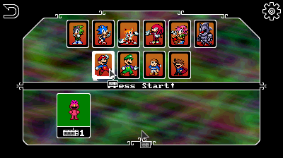
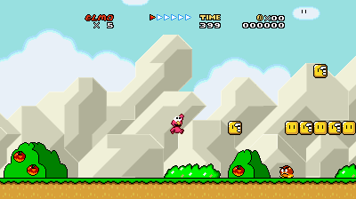
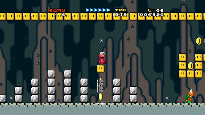
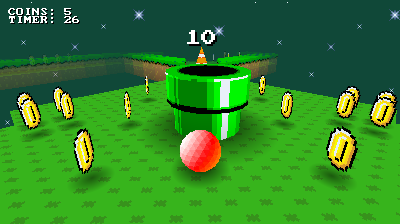

Loading navbar...
Elmo (Super Mario World) Sonic Boll 1.9.3 Player Skin
Goes over Mario
DOWNLOAD
.zip file (1.42 MB)
Credit to
Freakyplanet
on The Spriters Resource for the Super Mario World styled Elmo and Big Bird sprites.





 .zip file (1.42 MB)
.zip file (1.42 MB)